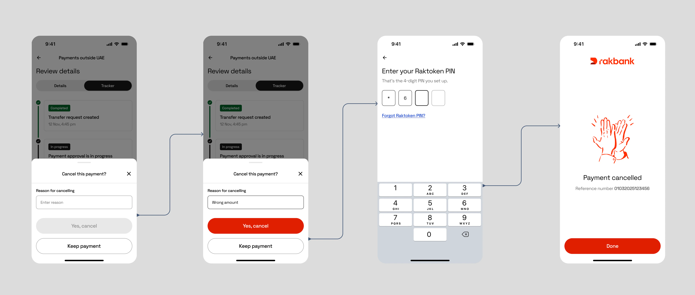

Follow the money
SWIFT's mandatory ISO 20022 migration carried rich status data most banks treat as invisible plumbing. I turned that mandate into a live, step-by-step tracker that shows customers exactly where their money is.


The opportunity
Send money out of the country and it vanished. For hours or days it moved through the SWIFT network with no signal to the person who sent it, and the app answered with a single word: pending.
“Where is my transfer?” was a recurring, measurable driver of support contacts: a repeating, quantifiable cost, and behind every call a customer who couldn't tell whether their money was safe. The pain was sizeable and the fix was fundable, because the ISO 20022 migration was already paying for the data it needed.
The bet, and how we'd measure it
Spend a compliance-mandated migration on a trust feature: a clear, living answer to “where is my money right now?”, honest even when a transfer fails, so people don't have to phone in to feel safe.
Success criteria, set before build
- Support deflection: fewer “where is my transfer?” contacts after launch
- Tracker engagement: how often customers open the Tracker instead of calling
Both instrumented at launch, with the readout scoped to the first post-launch window.
“The MT→MX migration was a compliance mandate. It was also, quietly, the raw material for a trust feature no one had thought to build.”
The reframe behind the project
How I ran it
Two shifts made it fundable: the move to ISO 20022 meant payment messages now carried rich, structured status end to end, and a design-system refresh gave license to rebuild rather than patch. I catalogued every state a transfer can occupy, including the failure and reversal branches banks usually hide, and made that map the single source of truth across product, engineering, QA, and compliance. It set scope, drove estimates, and became the contract every team built against, so we weren't renegotiating the state space one screen at a time.
The journey
A transfer isn't one event: it's a journey through many states, and the product bet was to show all of them, including the failures and reversals banks usually hide behind “pending”. Exposing bad news honestly is what earns trust, so failure and reversal states were in scope from day one, each with a name, a plain-language status, and a defined next step.
Two decisions that made it deflect, not just display
The metric wasn't “did we show status”, it was “did customers stop calling”. Two calls did most of that work.
- Split Details from Tracker. The old screen answered what is this transaction? and where is it right now? on one surface. Separating them let the Tracker be a clean, glanceable timeline: the thing that actually replaces a phone call, while Details held the reference facts for records and disputes.
- Wrote status names to answer the customer, not to mirror the back-end. “Processing” became “Checking your transfer”; “Failed” became “Money not sent”, which answers the only question that matters: did money leave? Labels this clear are what let the feature deflect contacts instead of generating them.
A scope cut, settled by one fact
Midway through, a single fact from engineering rewrote a whole branch of the plan: cancellation can only happen before the debit is taken. I used it to cut scope hard:
- Deleted an entire class of states from the build: cancellation-after-debit, partial refunds. Less to design, spec, test, and support.
- Simplified the copy: no refund language needed, just clear confirmation that the account was never charged.
- Collapsed the flow to a single clean path, de-risking the release against a fixed migration deadline.
Business logic like this is cheapest to lock down before the screens multiply, so I drove the open questions to closure early, kept as grouped, tagged comments routed to their decision owners, so nothing stayed ambiguous by accident.

What shipped
- Shipped in production as part of Rakbank's international payments, on the migration deadline
- Customers now see live, step-level status for SWIFT transfers, including failures and reversals, instead of a single “pending”
- Deflection and engagement instrumented at launch, with the first readout scoped to the post-launch window
The roadmap from here
- Proactive status via push notifications, deferred to a fast-follow so v1 could ship on the mandate deadline
- Validate comprehension of the rarer states; “Reversal pending” is accurate but untested with real users
- Read Tracker engagement against support contact rates to quantify the deflection and trust effect
Looking back
What started as a mandatory back-end migration became a product question: how do you make someone feel safe about money they can't see, and how do you know it worked?
The answer wasn't a fancier progress bar. It was spotting the opportunity inside a compliance mandate, telling the truth at every step, especially the ones that go wrong, and instrumenting it so trust becomes something you can measure.
Want to talk through the details?
Happy to walk through the decisions, the state space, and what didn't make the cut.
Get in touch